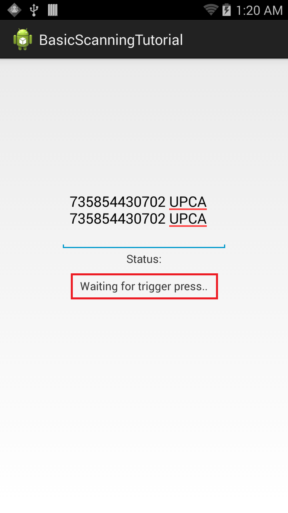

Overview
This guide provides a walk-through of the steps for creating an application that uses Barcode/Scanning APIs to perform Scanning operations on a Zebra Android device without using Profile Wizard. The API uses Barcode Manager, which is the primary object for accessing barcode scanning features.
Note: The demo app in this guide is intended for tutorial purposes only and should not be used in production environments.
Create The Project
Start by creating a new project in Android Studio. Call it BasicScanningTutorial to match later references in this guide. For help, see the Android Studio tutorial.
Enable Android Permissions
Modify the application's Manifest.xml file to use the EMDK library and to set permissions for EMDK to scan the barcodes.
Enable permissions for
com.symbol.emdk.permission.EMDK:<manifest xmlns:android="http://schemas.android.com/apk/res/android" package="com.example.basicscanningtotorial"> <uses-permission android:name="com.symbol.emdk.permission.EMDK" /> <application> ... </application> </manifest>Enable the EMDK library in the application node:
<uses-library android:name="com.symbol.emdk" />Add references to the libraries:
import com.symbol.emdk.EMDKManager; import com.symbol.emdk.EMDKManager.EMDKListener; import com.symbol.emdk.barcode.ScanDataCollection; import com.symbol.emdk.barcode.Scanner.DataListener; import com.symbol.emdk.barcode.Scanner.StatusListener; import com.symbol.emdk.barcode.StatusData;Extend the activity to implement
EMDKListener, implementStatusListenerfor notifying client applications to notify scan events, and override itsonStatusfunction.public class MainActivity extends Activity implements EMDKListener, StatusListener, DataListener{ //some lines of code omitted for clarity @Override public void onClosed() { // TODO Auto-generated method stub } @Override public void onOpened(EMDKManager emdkManager) { // TODO Auto-generated method stub } @Override public void onData(ScanDataCollection scanDataCollection) { // TODO Auto-generated method stub } @Override public void onStatus(StatusData statusData) { // TODO Auto-generated method stub } }Create some global variables to hold the instance objects of
EMDKManager,BarcodeManagerandScanner. These variables are used throughout the code. This section also adds some UI elements starting with a TextView to display the status of the scanning operation and EditText to populate scanned barcode data.// Declare a variable to store EMDKManager object private EMDKManager emdkManager = null; // Declare a variable to store Barcode Manager object private BarcodeManager barcodeManager = null; // Declare a variable to hold scanner device to scan private Scanner scanner = null; // Text view to display status of EMDK and Barcode Scanning Operations private TextView statusTextView = null; // Edit Text used to display scanned barcode data private EditText dataView = null; // boolean flag to start scanning after scanner initialization // Used in OnStatus callback to ensure scanner is idle before read() method is called private boolean startRead = false;Design a simple UI that has a TextView to display the status of scanning operation. Above that is an EditText element to populate scanned barcode data.
Remove all the code inside the
res/layout/activity_main.xmlfolder and add the following XML layout code for the UI:<RelativeLayout xmlns:android="http://schemas.android.com/apk/res/android" xmlns:tools="http://schemas.android.com/tools" android:layout_width="match_parent" android:layout_height="match_parent" android:padding="16dip" tools:context=".MainActivity" > <EditText android:id="@+id/editText1" android:layout_width="wrap_content" android:layout_height="wrap_content" android:layout_above="@+id/textViewStatusTitle" android:layout_centerHorizontal="true" android:ems="10" android:fadeScrollbars="true" android:inputType="none|textMultiLine" /> <TextView android:id="@+id/textViewStatus" android:layout_width="wrap_content" android:layout_height="wrap_content" android:layout_centerInParent="true" android:text="" /> <TextView android:id="@+id/textViewStatusTitle" android:layout_width="wrap_content" android:layout_height="wrap_content" android:layout_above="@+id/textViewStatus" android:layout_centerHorizontal="true" android:layout_marginBottom="15dp" android:text="Status:" /> </RelativeLayout>In the onCreate method, take the reference of UI elements that are declared in
res/layout/activity_main.xmlto use them in the Activity. Then callgetEMDKManagerto initialize EMDK and confirm that it's ready.// Reference to UI elements statusTextView = (TextView) findViewById(R.id.textViewStatus); dataView = (EditText) findViewById(R.id.editText1); // The EMDKManager object will be created and returned in the callback. EMDKResults results = EMDKManager.getEMDKManager( getApplicationContext(), this); // Check the return status of getEMDKManager and update the status Text // View accordingly if (results.statusCode != EMDKResults.STATUS_CODE.SUCCESS) { statusTextView.setText("EMDKManager Request Failed"); }Write a method
initializeScannerto initialize and enable the scanner and its listeners by using the Barcode Manager object. Theenablemethod enables the scanner hardware. This method does not turn on the laser to start scanning, but makes the scanner available to the application. If the same scanner is enabled by another application, calling theenable()method results in aScannerException.// Method to initialize and enable Scanner and its listeners private void initializeScanner() throws ScannerException { if (scanner == null) { // Get the Barcode Manager object barcodeManager = (BarcodeManager) this.emdkManager .getInstance(FEATURE_TYPE.BARCODE); // Get default scanner defined on the device scanner = barcodeManager.getDevice(DeviceIdentifier.DEFAULT); // Add data and status listeners scanner.addDataListener(this); scanner.addStatusListener(this); // Hard trigger. When this mode is set, the user has to manually // press the trigger on the device after issuing the read call. scanner.triggerType = TriggerType.HARD; // Enable the scanner scanner.enable(); //set startRead flag to true. this flag will be used in the OnStatus callback to insure //the scanner is at an IDLE state and a read is not pending before calling scanner.read() startRead = true; } }Create a method to release scanner resources when no longer required. Name this method
deInitilazeScanner, and call thedisable()method to unlock the scanner and make it available to other applications.private void deInitializeScanner() throws ScannerException { if (scanner != null) {
}try { if(scanner.isReadPending()){ scanner.cancelRead(); } scanner.disable(); } catch (Exception e) { e.printStackTrace(); } try { scanner.removeDataListener(this); scanner.removeStatusListener(this); } catch (Exception e) { e.printStackTrace(); } try { scanner.release(); } catch (Exception e) { e.printStackTrace(); } scanner = null; }Use the
onOpenedmethod to get a reference to theEMDKManager. TheEMDKListenerinterface triggers this event when the EMDK is ready to be used. The EMDKListener interface must be implemented to get a reference to theEMDKManagerAPIs. This event passes theEMDKManagerinstance and assigns it to the global variableemdkManagercreated in the earlier steps. Used that instance to get an instance of Barcode Manager to enable scanning.this.emdkManager = emdkManager; try { // Call this method to enable Scanner and its listeners initializeScanner(); } catch (ScannerException e) { e.printStackTrace(); }When a barcode is scanned, its data is received in the
onDatamethod callback. This step gets that data, processes it in the desired format and populates the EditText UI element.The received data should be processed in a background thread so as not to block the UI thread. This can be done using Android's AsyncTask. Create the AsyncTask
AsyncDataUpdatethat takes ScanDataCollection that has the scanned data. ThedoInBackgroundmethod parses the barcode data and label type into strings, which are passed to the UI thread in theonPostExecutemethod of AsyncTask to populate.As referenced earlier, it's possible to call the
read()method in this callback so that the user can scan multiple barcodes.// Update the scan data on UI int dataLength = 0; // AsyncTask that configures the scanned data on background // thread and updated the result on UI thread with scanned data and type of // label private class AsyncDataUpdate extends AsyncTask<ScanDataCollection, Void, String> {
}@Override protected String doInBackground(ScanDataCollection... params) { // Status string that contains both barcode data and type of barcode // that is being scanned String statusStr = ""; try { // Starts an asynchronous Scan. The method will NOT turn ON the // scanner, but puts it in a state in which the scanner can be turned // on automatically or by pressing a hardware trigger scanner.read(); ScanDataCollection scanDataCollection = params[0]; // The ScanDataCollection object gives scanning result and the // collection of ScanData. So check the data and its status if (scanDataCollection != null && scanDataCollection.getResult() == ScannerResults.SUCCESS) { ArrayList<ScanData> scanData = scanDataCollection .getScanData(); // Iterate through scanned data and prepare the statusStr for (ScanData data : scanData) { // Get the scanned data String a = data.getData(); // Get the type of label being scanned LabelType labelType = data.getLabelType(); // Concatenate barcode data and label type statusStr = barcodeData + " " + labelType; } } } catch (ScannerException e) { // TODO Auto-generated catch block e.printStackTrace(); } // Return result to populate on UI thread return statusStr; } @Override protected void onPostExecute(String result) { // Update the dataView EditText on UI thread with barcode data and // its label type if (dataLength++ > 50) { // Clear the cache after 50 scans dataView.getText().clear(); dataLength = 0; } dataView.append(result + "\n"); } @Override protected void onPreExecute() { } @Override protected void onProgressUpdate(Void... values) { }We call this AsyncTask in overridden
onDatamethod, by creating an instance ofAsyncDataUpdateand passing thescanDataCollectionfor further processing.// Use the scanned data, process it on background thread using AsyncTask // and update the UI thread with the scanned results new AsyncDataUpdate().execute(scanDataCollection);Whether scanning the barcode by pressing the hard scan key or keeping it idle, it returns the status of the scanner at a specific point in time in the overridden
onStatusmethod of the implementedStatusListenerinterface. Since the status also is being displayed along with barcode data, the app can make use of this method and populate the status.Just like scanned data, the scanner status is being processed in a background thread. Hence another AsyncTask (named
AsyncStatusUpdate) is created to take StatusData and processes it in thedoInBackgroundmethod to retrieve the state in string format. This is populated in status Text View in the UI thread in theonPostExecutemethod of the AsyncTask.// AsyncTask that configures the current state of scanner on background // thread and updates the result on UI thread private class AsyncStatusUpdate extends AsyncTask<StatusData, Void, String> {
}@Override protected String doInBackground(StatusData... params) { String statusStr = ""; // Get the current state of scanner in background StatusData statusData = params[0]; ScannerStates state = statusData.getState(); // Different states of Scanner switch (state) { // Scanner is IDLE case IDLE: statusStr = "The scanner enabled and its idle"; break; // Scanner is SCANNING case SCANNING: statusStr = "Scanning.."; break; // Scanner is waiting for trigger press case WAITING: statusStr = "Waiting for trigger press.."; break; // Scanner is not enabled case DISABLED: statusStr = "Scanner is not enabled"; break; default: break; } // Return result to populate on UI thread return statusStr; } @Override protected void onPostExecute(String result) { // Update the status text view on UI thread with current scanner // state statusTextView.setText(result); } @Override protected void onPreExecute() { } @Override protected void onProgressUpdate(Void... values) { }We call this AsyncTask in overridden
onStatusmethod, by creating an instance ofAsyncStatusUpdateand passing theStatusDatafor further processing.// process the scan status event on the background thread using // AsyncTask and update the UI thread with current scanner state new AsyncStatusUpdate().execute(statusData);Override the
onDestroymethod to release the EMDKManager resources:@Override protected void onDestroy() { super.onDestroy(); if (emdkManager != null) {
} }// Clean up the objects created by EMDK manager emdkManager.release(); emdkManager = null;When the app is done scanning, scanner hardware resources must be released for other applications to use. Override
onStopmethod and disable the scanner to release it:@Override protected void onStop() { // TODO Auto-generated method stub super.onStop(); try { if (scanner != null) { // Releases the scanner hardware resources for other application // to use. Must be called as soon as scanning is done. // scanner.removeDataListener(this); scanner.removeStatusListener(this); scanner.disable(); scanner = null; } } catch (ScannerException e) { e.printStackTrace(); } }Lastly, clean up the objects created by EMDK manager in
onClosedmethod in case EMDK closed abruptly:// The EMDK closed abruptly. // Clean up the objects created by EMDK // manager if (this.emdkManager != null) {
}this.emdkManager.release(); this.emdkManager = null;
The sample app is now ready to use.
Running the Application
Connect the device (with the latest EMDK runtime) to a USB port on the development host. Note: The device must be in USB Debug mode.
Run the application.

A Toast message appears indicating that the Scanner has been enabled and scans can begin by pressing hard scan button of the device.
Pressing the hard scan button causes the status listener in the code to start working; the current status of Scanner (which is "Scanning") is displayed in the Status TextView.

Once finished with scanning, release the hard scan button. Data is populated to EditText and status "Idle" is displayed in the Status TextView.

This is how Barcode/Scanning APIs can be used to perform Basic Scanning operations on Zebra devices without using the Profile Wizard.
Important Programming Tips
Edit the manifest
Be sure to make the following required changes in the application's AndroidManifest.xml:
Note:
- Include the permission for EMDK:
<uses-permission android:name="com.symbol.emdk.permission.EMDK"/>Note:
- Use the EMDK library:
<uses-library android:name="com.symbol.emdk"/>Installing the EMDK for Android application without deploying the EMDK runtime on the Zebra device fails if the shared library is missing from the device.
Use DataWedge v1.7.12 or higher to test the
ProfileManager.processProfile()for DataWedge profiles.
Content Backup
Once the barcode is enabled, the read method is called on the scanner and the scanning API provides starts an asynchronous scan. The method does turn on the scanner, but puts the scanner in a state in which it can be turned ON either automatically or by pressing a hardware trigger as determined by the Scanner.TriggerType. The data notification must registered in order to scan and get the scan data. The read request can be canceled by issuing a cancelRead. If a read() is submitted while another read is pending, the method call fails. Therefore, Zebra recommends checking whether a read is pending by calling isReadPending() before submitting a read(). A read() also can be submitted from within onData and onStatus events. If called within onStatus, it should be called only when IDLE status is received. If called within onData, then checking for isReadPending() is recommended.
Note: The
readmethod allows a single barcode scan only. If multiple scans are desired, thereadmethod must be called multiple times.
What's Next
After completing this basic tutorial, the next logical step might be to explore the Barcode/Scanning APIs in depth, and use them to perform advanced scanning operations.